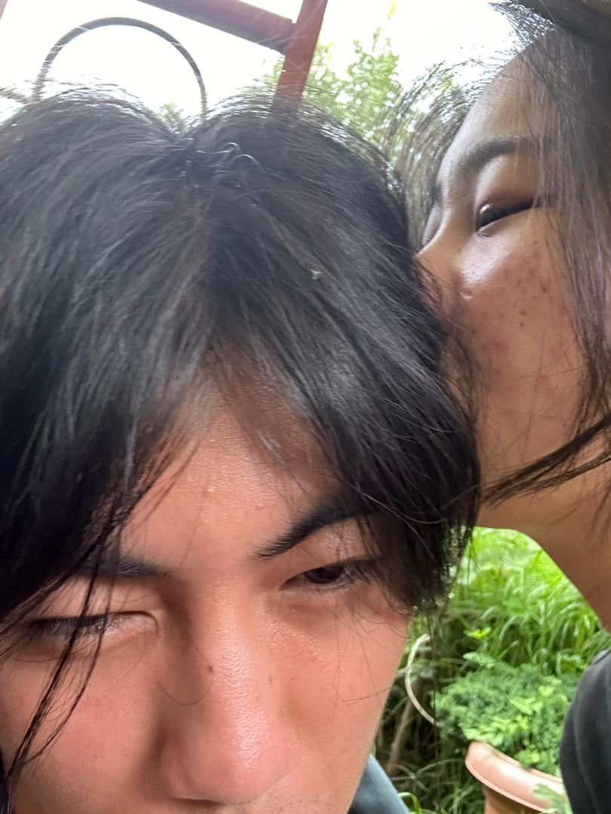

Us just hugging
Time is an illusion. However, every second we spent together was not.

Time is an illusion. However, every second we spent together was not.
All our dates felt like a dream, even as we were living it in the moment. Every time we went out, I would remember Andy Bernard's quote from The Office, "I wish there was a way to know you're in the good old days, before you've actually left them", for me every moment was a part of said good old days. I did'nt want to leave it, who would if they got to experience what we did. I am grateful that we did'nt take time to be comfortable around each other, it all came s very naturally, nothing too abrupt, or out of place, eveyrthing just right and at just the right moments. In some other universe, I would've loved to go slowly with you irl too, but this was the condition we were handed, and I think we did a pretty good job at making the most of what we were given. Thank for that:)
(dancing in the moonlight by toploader is one of my favorite songs ever) While it all felt like a dream, the most dream like was our second date, when we danced in the darkness at Kaja Throm. Such an exhausting day mo ahaha, building thelego flowers, walking all around, making out at Ambient building, getting caught muahahahaha. So much happened that day I feel like. Tryning to find a new place to mae out at after leaving Ambient, only to circle back to Kaja Throm. When we sat down at the same bench I was sitting at just a year prior felt weird to me. Just one year, and my life had changed so much (for the better of course), from sitting at the bench alone, not being able to tell you my feelings, to sitting there with you, sharing some of the happiest moments of my life with the girl I love. It was pretty dark, but I could still make out your face perfectly. Gesturing you to come to me, one hand on your waist, the other holding your own, our bodies so close together we might just have been the same person in that moment, not just emotionally, but physically too. Moving around in circles, swaying back and forth as I sang 'Something Stupid' by Frank Sinatra. "And then I go and spoil it all, by saying something stupid like I love you".
All our dates were amazing. I loved exploring Thimphu together with you, from ambient, to takin park, to junction way behind Pelkhil, to the botanical park, and of course, Kaja (our territory atp). I am grateful for all of it, every second we spent together, every time we made eye contact, every time we hugged, held hands, and kissed. It was all magical and I cannot wait to experience it all with you again.